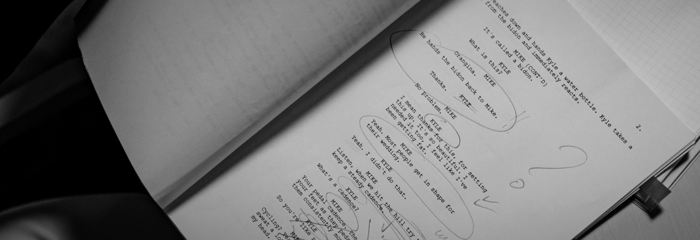

55
مشروعًا قيّمها فريقنا
منذ سبتمبر

نحو تطوير المواهب في الكتابة السينمائية
تسعى سين ون إلى دعم الكتّاب وصنّاع الأفلام من خلال تقديم خدمات متخصصة في تقييم النصوص وتطوير المشاريع، وإتاحة فرص التواصل والتعاون مع الجهات العاملة في القطاع السينمائي
01 / 03
نعمل مع جهات في قطاع السينما السعودي
خدماتنا
من التقرير إلى الاستضافة
تبدأ رحلتك بتقييم نصك ومن خلاله نُرشّح المشاريع الواعدة للانضمام إلى مسار الاستضافة

تقييم النصوص تقرير مهني يُعدّه قارئ متخصص لتقييم النصوص السينمائية القصيرة والطويلة والمعالجات الدرامية وفق تسعة محاور عرض التغطيات
استضافة المشاريع
نُرشّح المشاريع الواعدة بناءً على نتائج التقييم، ونعمل على تطويرها وربطها بجهات الإنتاج، بموافقة كتّابها مع الحفاظ على حقوقهم
بالترشيح بعد استلام تقرير التقييم
لماذا سين ون
ما الذي تحصل عليه بعد التقييم؟
نظرة أعمق إلى قصتك
قراءة متخصصة تساعدك على رؤية ما يميّز قصتك وما قد لا تلاحظه أثناء كتابتها
ملاحظات دقيقة على مشروعك
تعرّف على نقاط قوة نصك والجوانب التي تحتاج إلى تطوير، من الفكرة والشخصيات والحبكة إلى الحوار والبناء وقابلية الإنتاج
رؤية واضحة لخطوتك التالية
ملاحظات عملية تساعدك على اتخاذ قرارات واضحة عند العمل على مسودتك التالية
بداية لفرص جديدة
فرصة للمشاريع الواعدة للترشيح لمسار الاستضافة والتطوير والوصول إلى شركاء في صناعة الأفلام
من يقرأ نصك
فريق القراءة والتطوير
يضم فريقنا كتّاب سيناريو وصنّاع أفلام متخصصين في تقييم النصوص، إلى جانب فريق تطوير إبداعي يتولى متابعة المشاريع المرشّحة للتطوير
ود القبلان
قائدة فريق القراءة
 مخرج سينمائي بخبرة تتجاوز 15 عامًا في السينما والتلفزيون، حاصل على ماجستير في الكتابة والإنتاج السينمائي الدوليين من ميلانو. يعمل على تحويل الأفكار إلى مشاريع مؤثرة موجهة للجمهور، بخبرة تمتد عبر أفريقيا والشرق الأوسط وأوروبا.
تعرّف على الفريق
مخرج سينمائي بخبرة تتجاوز 15 عامًا في السينما والتلفزيون، حاصل على ماجستير في الكتابة والإنتاج السينمائي الدوليين من ميلانو. يعمل على تحويل الأفكار إلى مشاريع مؤثرة موجهة للجمهور، بخبرة تمتد عبر أفريقيا والشرق الأوسط وأوروبا.
تعرّف على الفريق
حسن زروق
قائد التطوير الإبداعي
تجارب الكتّاب
ماذا يقول الكتّاب عن تجربتهم معنا؟
رسائل شاركنا بها الكتّاب بعد استلام تقارير التقييم
«كانت التجربة أكثر من مجرد تقرير تقييم؛ بل كانت خطوة مهمة في رحلتي ككاتب. ساعدتني على رؤية مشروعي من منظور مهني، وفهم نقاط قوته وما يحتاج إلى تطوير. منحتني ثقة أكبر بعملي، ودافعًا للاستمرار في الكتابة وتطوير مشروعي.
كل الشكر والتقدير لفريق سين ون على وقتهم وجهودهم واهتمامهم بتقديم تجربة احترافية تثري رحلة الكاتب»
«التقييم كان عادل وأنصفني، وخلّاني أتشجع وأؤمن بمشروعي أكثر. أتمنى أتعرف على القارئ أكثر وأقول له شكرًا، وجميلك راح أردّه يوم تشوف ‹ليس حرج› يفوز بمنح وينعرض على الشاشات بإذن الله.»
“Another step forward for BRWAL. Grateful to Scene One for this opportunity, and for every step that helps us grow, develop and make film further.”
لديك أسئلة؟
الأسئلة الشائعة
تأسست Scene One بهدف مساعدة كتّاب السيناريو الصاعدين على دخول صناعة الأفلام.
تحصل على تقرير مكتوب ومفصل من قارئ متخصص. يوضح التقرير نقاط قوة السيناريو، والجوانب التي يمكن تطويرها، ويقدم اقتراحات عملية للمسودة التالية.
يُعرف هذا النوع من التقارير في صناعة السينما والتلفزيون باسم Script Coverage. ونقدمه في سين ون بوصفه قراءة احترافية متأنية تتضمن ملاحظات عملية تساعد الكاتب على تطوير نصه.
هذه الخدمة مخصصة لكتّاب السيناريو وصنّاع الأفلام في مختلف مراحل العمل، ممن يرغبون في الحصول على نظرة خارجية متخصصة قبل إعادة الكتابة، أو تقديم النص، أو طرح المشروع، أو تطويره بشكل أعمق.
من الصعب أن ترى عملك بموضوعية كاملة عندما تكون أنت مؤلفه. يساعدك القارئ المتخصص على فهم ما ينجح في النص، وما قد يحتاج إلى توضيح، وأين تضعف القصة، وما التغييرات التي قد تحقق أكبر أثر.
بحسب نوع الخدمة، يتناول التقرير الفكرة والموضوع، وعنصر الجذب، والرهانات والحبكة، والشخصيات، والحوار، والبناء والإيقاع، وقابلية الإنتاج، والعرض العام.
نعم. يتضمن التقرير عرضًا واضحًا لفكرة المشروع وقصته الأساسية، إلى جانب ملاحظات حول نقاط قوته الإبداعية والجوانب التي يمكن تطويرها.
قد يقدم القارئ اقتراحات عملية ويحدد مسارات محتملة لإعادة الكتابة. لكن التقرير لا يتضمن إعادة كتابة السيناريو، ولا يفترض وجود طريقة واحدة صحيحة لتطويره.
يركز التقرير أساسًا على ملاحظات واضحة وبنّاءة، بدل اختزال السيناريو في رقم واحد. وعند الاقتضاء، قد تقدم سين ون توصية داخلية أو تحدد مدى ملاءمة المشروع للترشيح.
اختر الخدمة الأنسب لمشروعك، وأكمل بيانات التقديم، وارفع ملفك، ثم ادفع باستخدام إحدى وسائل الدفع المعتمدة. ستصلك رسالة تأكيد بعد استلام طلبك.
يرجى تقديم السيناريو بصيغة PDF، ما لم يذكر نموذج التقديم صيغة أخرى. تأكد من أن الملف كامل، وواضح، وجاهز للقراءة.
نعم. تقدم سين ون خدمة منفصلة للمعالجات التي لم تتحول بعد إلى سيناريو مكتمل. وينبغي أن توضح المعالجة القصة، والشخصيات الرئيسية، والمسار الدرامي، والفيلم الذي يتجه المشروع إلى أن يصبحه.
نستقبل حاليًا النصوص القصيرة التي تتراوح تقريبًا بين 10 و60 صفحة، ونصوص الأفلام الطويلة التي تتراوح تقريبًا بين 60 و200 صفحة، إضافة إلى المعالجات المقدمة عبر خدمة المعالجة.
نعم. يجب تقديم كل مشروع بشكل منفصل حتى يمكن إسناده ومعالجته وقراءته بصورة مستقلة.
يقرأ نصك قارئ متخصص لديه خبرة في كتابة السيناريو، أو صناعة الأفلام، أو تطوير المشاريع، أو مجالات ذات صلة بالصناعة. وقد يختلف القارئ بحسب طبيعة المشروع وتوافر القرّاء.
تتولى سين ون إسناد النص إلى القارئ المناسب بحسب طبيعة المشروع. وإذا أصبح اختيار القارئ متاحًا، فسيُوضح ذلك بوضوح أثناء التقديم.
تستغرق ملاحظات النصوص القصيرة عادةً من 10 إلى 15 يوم عمل. وقد تستغرق ملاحظات نصوص الأفلام الطويلة حتى أربعة أسابيع، بينما تستغرق ملاحظات المعالجات عادةً من 7 إلى 12 يومًا. وتبدأ المدة من لحظة إسناد المشروع إلى أحد القرّاء.
يُرسل التقرير إلكترونيًا إلى عنوان البريد المرتبط بطلبك.
يمكنك التواصل مع سين ون بشأن أي استفسار يتعلق بالخدمة أو التقرير. يشمل ذلك الاستشارات الإضافية أو مناقشة التقرير بشكل موسع بعد استلام التقرير.
نعم. يُتعامل مع نصك بوصفه مادة سرية، ولا يُشارك إلا مع الأشخاص المخولين بتقديم الخدمة. ولا يُشارك مع الشركاء الإنتاجيين دون موافقتك الكتابية الصريحة.
تحتفظ بكامل ملكية نصك وجميع حقوق الملكية الفكرية المرتبطة به. ويمنح تقديم العمل سين ون إذنًا محدودًا بالقدر اللازم لقراءته وتخزينه ومعالجته من أجل تقديم الخدمة المطلوبة.
لا. لا تستخدم سين ون النصوص المقدمة لتدريب أنظمة الذكاء الاصطناعي. كما يُمنع القرّاء من إدخال المواد المقدمة في أدوات الذكاء الاصطناعي دون موافقة كتابية مسبقة.
توصي سين ون بالنظر في تسجيل النص لدى الهيئة السعودية للملكية الفكرية أو الجهة المناسبة لتسجيل الحقوق قبل مشاركته. ولا يغني التسجيل عن الاحتفاظ بسجلات واضحة أو طلب المشورة القانونية المناسبة.
لا. تقدم الخدمة قراءة وملاحظات تطويرية، ولا تشمل إعادة كتابة السيناريو، أو التحرير التفصيلي، أو التدقيق اللغوي، أو تنسيق النص، أو ضمان قبوله من منتج، أو استوديو، أو مهرجان، أو مسابقة.
قد تساعدك الملاحظات على تحديد ما يحتاج إلى إعادة كتابة، والطريقة التي يمكنك من خلالها العمل على مسودتك التالية. أما خدمات إعادة الكتابة أو الإرشاد أو التطوير المستقلة فسيتم توضيحها وتسعيرها بشكل منفصل.
قد تُنظر بعض المشاريع المختارة للترشيح إلى جهات في الصناعة. ولا يتم الترشيح تلقائيًا، بل بعد الحصول على موافقة الكاتب الكتابية الصريحة. ولا تضمن سين ون اهتمام أي جهة بالمشروع، أو تطويره، أو تمويله، أو إنتاجه.
شراء الخدمة يضمن حصول نصك على قراءة احترافية وتقرير متكامل يساعدك على فهم نقاط قوته وفرص تطويره. أما التوصية أو الترشيح لفرص الصناعة، فتعتمد على جودة النص ومدى جاهزيته، ولا تُعد نتيجة مضمونة لشراء الخدمة. نؤمن بأن كل نص يستحق قراءة جادة، وأن الفرص تُبنى على استحقاق العمل وإمكاناته.
نعم. لن يُشارك نصك مع أي شريك إنتاجي دون موافقتك الكتابية الصريحة.
تختلف الأسعار بحسب نوع المشروع وحجمه. وتُعرض أسعار الإطلاق الحالية بوضوح في صفحة الخدمات قبل تقديم الطلب.
يتم الدفع عند تقديم المشروع، باستخدام إحدى وسائل الدفع المعتمدة الموضحة على المنصة.
يمكنك طلب استرداد كامل الرسوم قبل إسناد نصك إلى أحد القرّاء. وبعد إسناد النص وبدء العمل عليه، لا يمكن عادةً استرداد الرسوم. وإذا تعذر على سين ون تقديم الخدمة لأسباب تعود إلى المنصة، فسيُرد المبلغ كاملًا خلال 14 يوم عمل.
نعم. يمكنك تقديم نسخة مطوّرة من المشروع نفسه — المسودة الثانية — مجانًا بعد استلام التقرير الأول، وفقًا للشروط الموضحة للخدمة المعنية.
تهدف خدمة المسودة الثانية إلى قراءة مدى تطور المشروع استجابةً للتقرير الأول. وسيتم توضيح نطاق القراءة الثانية عند تقديم النسخة المطوّرة.
هدفنا أن نمنح النصوص الجيدة فرصة حقيقية للتقدّم نحو الصناعة. نبدأ بقراءة احترافية تساعدك على فهم إمكانات نصك ومدى جاهزيته، وقد تفتح الأعمال المتميزة بابًا لفرص أوسع من خلال شبكة علاقاتنا في القطاع السينمائي. ومع ذلك، لا نضمن الإنتاج أو التمويل أو القبول في المهرجانات والمسابقات، فهذه قرارات تعود إلى الجهات المعنية وتعتمد على عوامل متعددة.
نؤمن بأن كل نص يستحق أكثر من مجرد حكم بأنه جيد أو سيئ. لذلك، يقدم قارئ سين ون تقييمًا مهنيًا يتناول ما ينجح في النص، وما يحتاج إلى مزيد من العمل، مع ملاحظات تطويرية تساعدك على رؤية قصتك من منظور جديد واتخاذ خطواتك التالية بثقة.
غايتنا ليست إصدار الأحكام على النصوص، بل مساعدتها على الوصول إلى أفضل إمكاناتها.
تركّز قراءتنا على جوهر العمل السينمائي؛ من البناء الدرامي والشخصيات والحوار إلى وضوح الرؤية وتماسك القصة. وقد يلفت القارئ انتباهك إلى الأخطاء اللغوية التي تؤثر في تجربة القراءة أو فهم النص، لكن الخدمة لا تتضمن تدقيقًا لغويًا أو تحريرًا نصيًا شاملًا.
بهذا نضمن أن ينصبّ اهتمام التقرير على ما يهمّك في هذه المرحلة: قوة قصتك وإمكاناتها السينمائية.
صُممت خدمة القراءة الاحترافية لتمنح السيناريو الاهتمام الذي يستحقه، لذلك ينصبّ التقييم الأساسي على النص نفسه وعناصره الدرامية والفنية.
أما إذا كنت ترغب في تطوير عنصر الجذب (Logline) أو العرض التقديمي لمشروعك، فقد تتوفر خدمات مخصصة لذلك، وسيُوضح نطاق كل خدمة ومخرجاتها قبل التقديم، لتختار ما يناسب احتياجات مشروعك ومرحلته.
الجيل القادم من صنّاع الأفلام لا ينبغي أن ينتظر من يكتشفه
هل كتبت قصة تستحق أن تُروى؟ ابدأ من المشهد الأول
قدّم نصك